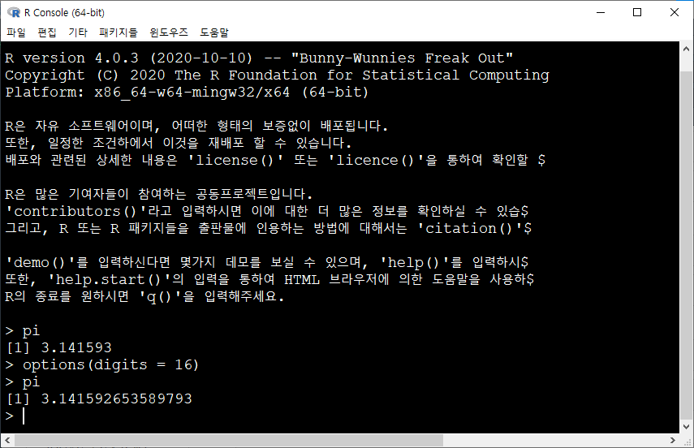

Chapter 2 R 프로그래밍 기초
2.1 산술 연산자
- +(더하기), -(빼기), *(곱하기), /(나누기), ^(자승), %%(나머지), %/%(몫)
## [1] 3## [1] 7연산의 우선순위인 ( ), { } , [ ] 중 대괄호[ ]는 R에 특수한 역할이 정의되어 있으므로 사용불가. 중괄호의 경우 오류는 없으나 정의된 다른 역할이 있으므로 사용을 자제해야 한다. ( )를 통하여 제어를 한다.
## [1] 9## [1] 9보통 한 줄에 명령어를 입력하게 되지만 길이가 긴 경우에는 연결 프롬포트로 ‘>’대신 ‘+’가 나타난다. 따라서 ‘+’이후에 프로그램을 입력하면 된다.
## [1] 7기본적으로 R에서 명령문은 한 줄에 한 명령문이다. 한 명령문의 마침은 ‘;’으로 구분한다. 따라서 한 행에 두 가지 이상의 명령문을 실행하려면 ‘;’을 이용한다.
## [1] 3## [1] 72.2 논리 연산자와 비교 연산자
논리값(logical)은 참(TRUE)이나 거짓(FALSE)값을 나타내며, 이러한 값은 조건식에 주로 이용한다. 논리값의 연산에는 &나 |를 사용하며, 각각 논리값의 교집합(and)과 합집합(or)을 의미한다.
## [1] TRUE1과 1은 같은 값이므로 TRUE값을 반환한다. 여기서 ==는 수학의 등호와 같은 역할을 한다.
## [1] FALSER에서 not의 의미는 !를 이용한다. 따라서 “5는 5가 아니다”의 의미를 뜻하기 때문에 FALSE 값을 반환한다.
비교연산자에는 <, >, <=, =>, ==, !=이 쓰이며, !은 부정 연산자를 의미한다.
## [1] FALSE## [1] TRUE## [1] TRUE## [1] FALSE논리형인 TRUE와 FALSE는 보기에는 문자처럼 보이지만 R 내부에서는 TRUE=1, FALSE=0으로 인식한다. 따라서 사칙연산에 사용도 가능하다. 또한 TRUE는 줄여서 T로, FALSE는 줄여서 F로 써도 동일하게 인식한다.
## [1] 2## [1] -1## [1] 1## [1] 1논리 연산자의 작동 원리는 다음과 같다.
## [1] FALSE## [1] TRUE## [1] FALSE## [1] TRUE2.3 기초 산술 함수
2.3.1 통계 함수
## [1] 12## [1] 4## [1] 4## [1] 2## [1] 4## [1] 6## [1] 2## [1] 2## 25% 75%
## 4 8## [1] 2 10## Min. 1st Qu. Median Mean 3rd Qu. Max.
## 2 4 6 6 8 10## [1] 2 4 6 8 102.3.2 로그 및 지수 함수 (Logarithms and Exponentials)
- 로그 함수
## [1] 2.302585## [1] 1## [1] 3.321928## [1] 2.302585- 지수 함수
## [1] 2.718282- 지수 \(e^{10}\)
## [1] 22026.472.3.3 삼각 함수
## [1] 0.5403023## [1] 0.841471## [1] 1.557408## [1] 0## [1] 1.570796## [1] 0.78539822.3.4 기타 수학 함수
## [1] 3.141593## [1] 3## [1] 1.732051## [1] -1## [1] 2.5## [1] 3## [1] 2## [1] 2## [1] 2.4- \(x\)의 계승 출력(\(x!\))
## [1] 120- \(x\)에서 \(y\)를 고르는 조합(combination)의 수(\(_xC_y\))
## [1] 10- 감마함수와 베타함수
## [1] 6## [1] 0.01666667R은 기본적으로 7자리까지 숫자를 표현한다. 표현되는 자리수를 변경하고자 하면 options() 함수를 사용한다. options(digits = 16)와 같이 지정하면 16자리로 설정된다.

2.4 객체의 명명과 할당
2.4.1 객체(변수) 만들기
상수나 변수, 객체의 이름을 작성할 때는 대소문자를 반드시 가려야 한다. 객체의 이름은 문자 a~z, A~Z와 숫자 0~9 그리고 ‘.’과 ‘’의 조합으로 구성한다. 첫 문자로 숫자와 ‘’은 사용할 수 없으며, if, for, c, pi와 같은 R프로그램의 내장 함수와 같은 이름은 사용 시 조심해야 한다.
할당은 변수나 객체에 값을 정의하는 것을 말한다. 할당 연산자로 ‘=’, ‘<-’, ‘<<-’ 세 가지 형태로 사용 가능하며, 되도록 ‘<-’를 사용하기를 권장한다. 만약, 함수 내에서 ‘=’를 사용하여 할당 한 경우 할당된 값은 함수가 수행된 후에 저장되지 않으나, ‘<-’, ‘<<-’를 통해 할당된 객체 값은 사라지지 않는다.
## [1] 3x <- 3 의 의미는 x라는 저장소에 3이라는 값을 저장하라는 의미이다. 할당에는 여러 가지 기호가 쓰이지만 여기서는 ‘ <- ’ 왼쪽 화살표를 쓰도록 한다. 그래서 일관되게 왼쪽 화살표 왼쪽엔 값이 저장될 객체(object) 이름을 쓰고 왼쪽 화살표 오른쪽에는 실질적으로 저장될 값을 지정한다.
R은 대화형 프로그램이기 때문에 기본적으로 명령어를 입력하면 바로 결과를 출력 해준다. 즉, input과 output이 대화하듯이 이루어진다. 하지만 할당을 하는 경우에는 input만 있고 output은 이루어지지 않는다. 따라서 할당을 하는 경우에는 output에 해당하는 명령어를 지정해야 하는데, 객체의 값을 보고 싶을땐 간단하게 객체의 이름을 입력하면 된다. 여기서는 x <- 3을 했기 때문에 x라는 객체 이름을 써주면 x가 가지고 있는 값을 출력해준다.
R은 대소문자를 가리기 때문에 항상 조심해야한다. 객체 x는 생성하였으나, X는 생성하지 않았기 때문에 값을 반환하지 않고 에러 문구를 출력한다.


2.5 데이터 유형
2.5.1 데이터의 기본 유형
데이터 값의 최소 단위를 기준으로 R에서 구분하고 있는 데이터의 기본 유형은 다음과 같다.
- 수치형(numeric) : 숫자로 이루어졌으며 정수형(integer)과 실수형(double)으로 구분한다.
- 논리형(logical) : 참(TRUE)이나 거짓(FALSE)의 논리값을 나타낸다.
- 문자형(character) : 문자나 문자열을 나타낸다.
- 복소수형(complex) : 실수와 허수로 구성된 복소수를 나타낸다.
데이터 값의 유형을 확인할때는 mode() 함수를 이용한다.
- mode() : 데이터의 유형을 나타내 주는 함수이다.
## [1] "numeric"## [1] "character"## [1] "logical"2.5.2 특수 데이터
R에서 정의되는 특수한 형태의 데이터는 다음과 같다.
- NULL : 비어있는 값으로 데이터 유형도 없으며 자료의 길이도 0임.
- NA : 결측값(missing value).
- NAN : 수학적으로 정의가 불가능한 수 (예: sqrt(-3)).
- Inf, -Inf : 양의 무한대와 음의 무한대.
특수한 형태의 데이터들과의 연산 결과는 보통 특수한 형태의 데이터가 되고 데이터의 형식은 연산에 사용된 다른 값들의 유형과 동일하게 된다.
## Warning in sqrt(-3): NaN이 생성되었습니다## [1] NaN## [1] Inf## numeric(0)## [1] NA2.5.3 데이터 유형 함수
데이터의 유형을 검증하기 위한 함수는 is.~ 형태를 이용한다. 만약 데이터 x의 유형이 수치형인지를 확인하려면 is.numeric()을 이용하며, 이때 결과는 TRUE 또는 FALSE로 반환한다.
is.numeric(x) : 수치형 여부
is.double(x) : 실수형 여부
is.integer(x) : 정수형 여부
is.logical(x) : 논리형 여부
is.complex(x) : 복소수형 여부
is.character(x) : 문자형 여부
is.na(x) : NA 여부
is.null(x) : NULL 여부
is.nan(x) : NaN 여부
is.infinite(x) : 무한 수치 여부
is.finite(x) : 유한 수치 여부
## [1] 180## [1] TRUE## [1] "Allen"## [1] FALSE## [1] TRUE2.5.4 데이터 유형 변경
서로 다른 유형의 데이터에 대한 연산결과는 R 프로그램에 의해 자동으로 하나의 유형으로 정의된다. 이러한 형상을 데이터 유형의 강제변환이라고 부르며 값의 유형별 우선순위는 다음과 같다.
문자형 > 복소수형 > 수치형 > 논리형
R에서 유형 변환은 ‘as.~’ 함수를 이용하며, 가능한 함수는 다음과 같다.
- as.numeric(x) : 수치형으로 변환
- as.logical(x) : 논리형으로 변환
- as.double(x) : 실수형으로 변환
- as.complex(x) : 복소수형으로 변환
- as.integer(x) : 정수형으로 변환
- as.character(x) : 문자형으로 변환
## [1] "3"## [1] FALSE## [1] TRUE## [1] TRUE## [1] 32.6 Built-in Constants
Built-in constants는 R에 값이 지정되어 내장되어 있는 객체를 뜻하며, 아래와 같은 객체들이 저장되어 있다.
## [1] "A" "B" "C" "D" "E" "F" "G" "H" "I" "J" "K" "L" "M" "N" "O" "P" "Q" "R" "S"
## [20] "T" "U" "V" "W" "X" "Y" "Z"## [1] "a" "b" "c" "d" "e" "f" "g" "h" "i" "j" "k" "l" "m" "n" "o" "p" "q" "r" "s"
## [20] "t" "u" "v" "w" "x" "y" "z"## [1] "Jan" "Feb" "Mar" "Apr" "May" "Jun" "Jul" "Aug" "Sep" "Oct" "Nov" "Dec"## [1] "January" "February" "March" "April" "May" "June"
## [7] "July" "August" "September" "October" "November" "December"## [1] 3.1415932.7 Reserved Words
R 예약어는 R에서 특별한 의미를 가지고 있는 단어를 의미한다. 따라서 변수명이나 사용자가 함수 등의 이름으로 사용하지 않는 것이 좋다.
예약어 : if, else, repeat, while, function, for, in, next, break, TRUE, FALSE, NULL, Inf, NaN, NA, NA_integer_, NA_real_, NA_complex_, NA_character_, …, ..1, ..2 등
R의 예약어에 대해 좀더 자세히 알고 싶으면, 다음과 같이 도움말 창을 불러온다.